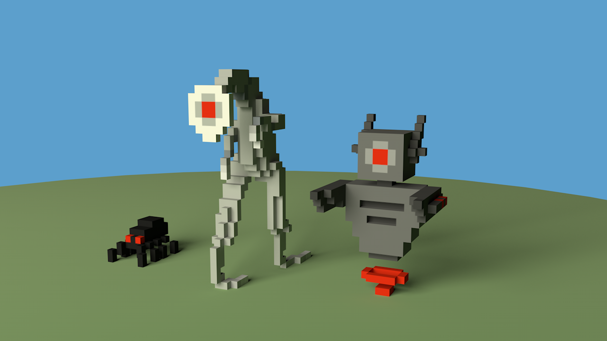
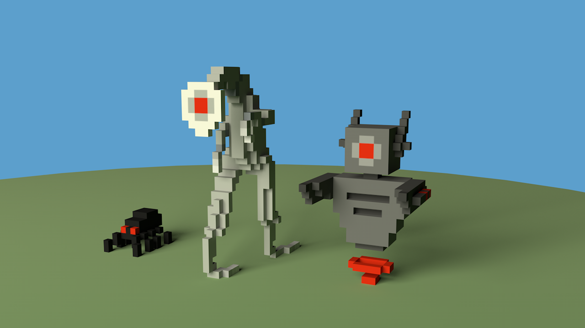
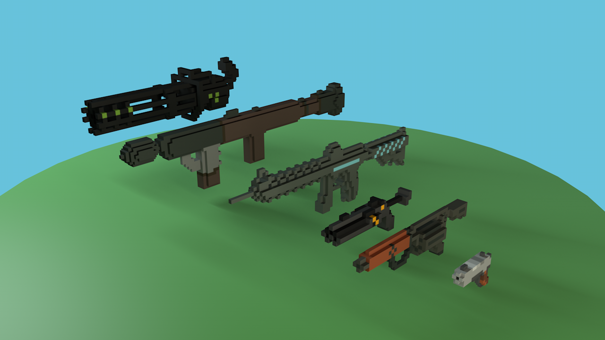

Unsurvivable VR


 
Unsurvivable VR was my first Unity game development project after my first venture for my AP Computer Science Final Project. I began working on it during a hackathon in 2018, and continued working on it heavily for the next year. I had a classmate of mine make all of the assets for me, which I then post processed in Blender and imported into Unity to create materials and texture. These assets replaced the original ones I had created for initial testing and development. The premise of the game was to last as long as possible through and endless onslaught of enemies, making it technically unsurvivable. Death in this game is inevitable, and it is your goal to escape it for as long as possible. Guns are randomly dropped from enemies with a random amount of ammo, and cannot be reloaded. When a gun is empty, it must be thrown away, and a new one must be picked up from a fallen enemy. This forces the player to be efficient with the use of their weapons and ammo, and keeps them on their toes.

Unsurvivable VR was my first Unity game development project after my first venture for my AP Computer Science Final Project. I began working on it during a hackathon in 2018, and continued working on it heavily for the next year. I had a classmate of mine make all of the assets for me, which I then post processed in Blender and imported into Unity to create materials and texture. These assets replaced the original ones I had created for initial testing and development. The premise of the game was to last as long as possible through and endless onslaught of enemies, making it technically unsurvivable. Death in this game is inevitable, and it is your goal to escape it for as long as possible. Guns are randomly dropped from enemies with a random amount of ammo, and cannot be reloaded. When a gun is empty, it must be thrown away, and a new one must be picked up from a fallen enemy. This forces the player to be efficient with the use of their weapons and ammo, and keeps them on their toes.
As of right now there are three Enemy types, and 4 weapon types. The first is a simple, swarming melee enemy, a spider. The Beamer is a larger humanoid-esque ranged enemy that likes to keep its distance from the player. And the final enemy was the CryBaby, a long slender monster that’s main priority was to boost the damage of other fellow enemies within it’s area of effect radius, only fighting the player directly as a last resort. The entire project was tested with an HP Windows Mixed Reality Headset, although I had friends test it on an Oculus and HTC Vive. The code for this project is private, as I am extremely proud of my hard work, and would like to publish the finished game on Steam. It took about a week of constant work just to create my own scripts for the player, its hands, and the teleportation system. Every rigidbody object, including the enemies, can be interacted with or grabbed by the player. I am looking forward to going back to this project to make new assets, and implement my new procedural generation system to create an infinitely generated dungeon with rooms of enemies instead of the current map that is in place.
